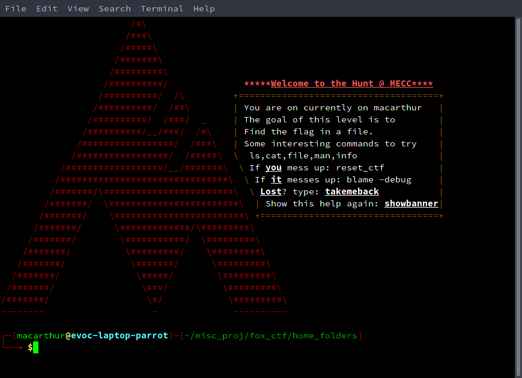
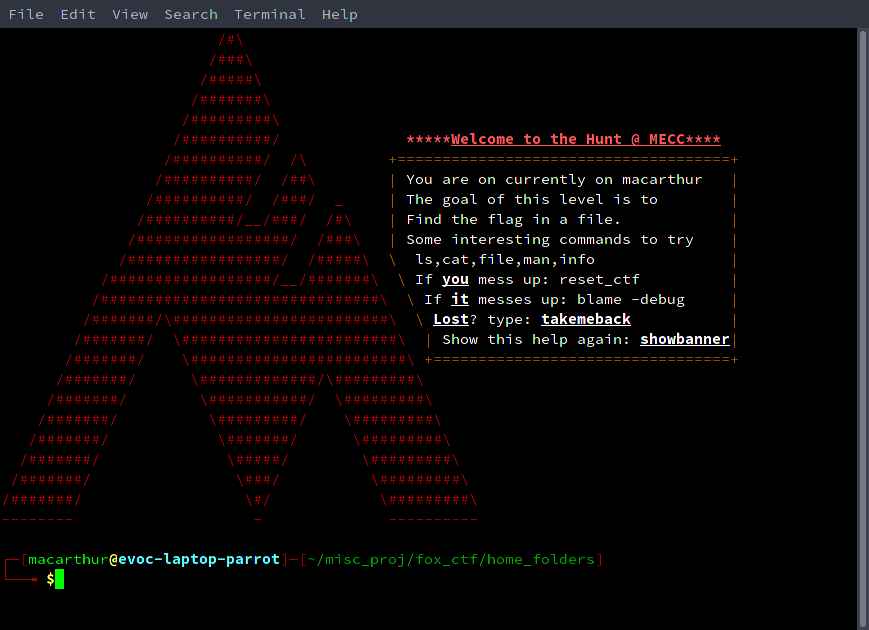

All code counts exclude external libraries.
We Are Not Forgotten The team besides me in no particular order(links are to their github profiles). Beside their profile is their primary task they were completing during the competition.
- Mohamed (Mo) Omane Profile Website Design/programming of said site.
- Richard Ho Profile Website Design/programming of said site.
- Ansh GwashProfile Android App development.
------------------------------------------------------------------------------- Language files blank comment code ------------------------------------------------------------------------------- HTML 7 50 33 212 Java 4 57 29 178 JavaScript 2 7 8 88 AppEngineScript 1 6 54 91 Python 1 4 0 34 CSS 3 1 0 21 Markdown 1 3 0 9 ------------------------------------------------------------------------------- SUM: 19 128 124 633 -------------------------------------------------------------------------------
c_library Direct link to it
-------------------------------------------------------------------------------- Language files blank comment code -------------------------------------------------------------------------------- C/C++ Header 5 70 170 411 Bourne Shell 3 2,040 1,733 10,620 m4 2 929 104 7,928 Bourne Again Shell 3 111 168 1,093 make 4 130 43 1,012 C 14 86 650 613 XML 4 0 0 216 -------------------------------------------------------------------------------- SUM: 69 3,366 7,732 21,982 --------------------------------------------------------------------------------
Fox and Hound CTF (Private) Repo
This repo contains 19 self-building and self-testing labs. Each time it's built all of instruction for each level are changed and updated with the current requirements. Also the scripts let you change all of teh passwords for each level. Each level gives you a password to the next level and each level builds upon the previous ones. It started as a clone of Bandit from overthewire but diverged very quickly into something that has
a deterministic build system for all flags. Further the total period for a repeat in flags is 35 builds before any password repeats again. Each password is a sha1 hash of a word and the level id as a salt thus making it
harder to bruteforce their answer. Currently it's being implemented at the virginia cyber range. It's currently also at Mountain Empire Community College
Fox CTF Welcome Image Show/Hide

Fox CTF Welcome Image Show/Hide

Code Counts -------------------------------------------------------------------------------- Language files blank comment code -------------------------------------------------------------------------------- Bourne Again Shell 47 342 1,374 3,008 C 12 63 240 859 Bourne Shell 24 87 403 607 HTML 1 10 0 113 C/C++ Header 1 2 31 12 awk 1 0 4 1 -------------------------------------------------------------------------------- SUM: 86 504 2,052 4,600 --------------------------------------------------------------------------------
Javascript Library Repo
------------------------------------------------------------------------------- Language files blank comment code ------------------------------------------------------------------------------- JavaScript 9 154 223 1,384 ------------------------------------------------------------------------------- SUM: 9 154 223 1,384 -------------------------------------------------------------------------------
Open Computer Forensics (Private) Repo
OpenCF is a collection of computer forensics labs that can be freely utilized for learning purposes. There are two labs. They are ranked based on dificulty. Both labs require students to analyze evidence, prove chains of custody, attestation of digital evidence. Evidence gathering, and looking for hidden files embedded in other ones. Case 0: This lab is easier and requires all of the basic utilities. It's called "The Case of the Bitten Skinner."
Case 1:" The Case of the Ruffled Feathers"
This case also requires the person to have wireshark as there is a file to be recovered from within a pcacp file captured from an ftp session.
Both cases require the following skills.
OpenCF is a collection of computer forensics labs that can be freely utilized for learning purposes. There are two labs. They are ranked based on dificulty. Both labs require students to analyze evidence, prove chains of custody, attestation of digital evidence. Evidence gathering, and looking for hidden files embedded in other ones. Case 0: This lab is easier and requires all of the basic utilities. It's called "The Case of the Bitten Skinner."
Case 1:" The Case of the Ruffled Feathers"
This case also requires the person to have wireshark as there is a file to be recovered from within a pcacp file captured from an ftp session.
Both cases require the following skills.
- Cracking Password Protected Archives
- Reading eMail headers to find out network topology
- Verifying Digital Signatures and know how Public-Key Infrastructure works
- Getting Attachments from eMails and then analyzing them.
- Getting hidden information from images and how to properly use steganography.
- Undelting files from a partition to recover instructions
- Making a report on their findings to hand off to a DA or similar person
- Proper report generation and understanding of protocols and procedures
- Incident remediation to prevent a similar attack from happening again
- Knowing common hacking tools and their uses
- Unix/Linux commands, utilities, and file evidence
- Reading captured packets and extracting data from within it
------------------------------------------------------------------------------- Language files blank comment code ------------------------------------------------------------------------------- HTML 3 8 0 316 Bourne Shell 2 8 0 16 ------------------------------------------------------------------------------- SUM: 5 16 0 332 -------------------------------------------------------------------------------
Open Capture The Flag(My CTF Chal builders) (Private) Repo
-------------------------------------------------------------------------------- Language files blank comment code -------------------------------------------------------------------------------- Python 21 221 486 1,308 C 13 82 317 1,088 Bourne Again Shell 2 35 158 344 Bourne Shell 10 20 68 279 PHP 6 21 13 241 JavaScript 5 16 108 223 C++ 1 13 89 63 make 1 1 0 6 -------------------------------------------------------------------------------- SUM: 59 409 1,239 3,552 --------------------------------------------------------------------------------
Password Generator Repo
Password Generator using uberhash for strong passwords
------------------------------------------------------------------------------- Language files blank comment code ------------------------------------------------------------------------------- JavaScript 33 1,460 2,239 11,367 HTML 13 65 81 820 PHP 5 28 100 589 Bourne Shell 3 96 66 352 CSS 1 4 8 149 ------------------------------------------------------------------------------- SUM: 55 1,653 2,494 13,277 -------------------------------------------------------------------------------
Question and Answer Library(WIP on hiatus right now) Repo
This repo will eventually contain a full platform for question and answering system for students to take quizzes etc. Except I won't be reliant on Quizlet and it'll all be open source and let me put my hand-made questions into it.
This repo will eventually contain a full platform for question and answering system for students to take quizzes etc. Except I won't be reliant on Quizlet and it'll all be open source and let me put my hand-made questions into it.
------------------------------------------------------------------------------- Language files blank comment code ------------------------------------------------------------------------------- JavaScript 13 765 999 4,903 HTML 6 14 34 360 CSS 3 11 47 174 PHP 6 5 17 89 Markdown 1 6 0 10 ------------------------------------------------------------------------------- SUM: 29 801 1,097 5,536 -------------------------------------------------------------------------------
RSA Library implementing custom attack creators etc.
------------------------------------------------------------------------------- Language files blank comment code ------------------------------------------------------------------------------- Python 10 190 165 732 ------------------------------------------------------------------------------- SUM: 10 190 165 732 -------------------------------------------------------------------------------
mwc4096 based RNG for PHP as an extension.
-------------------------------------------------------------------------------- Language files blank comment code -------------------------------------------------------------------------------- m4 8 2,166 1,407 19,186 Bourne Shell 5 1,310 2,331 13,371 Bourne Again Shell 2 13,45 1,995 8,371 make 1 16 0 155 C 1 26 88 123 awk 2 15 22 70 C/C++ Header 2 34 68 48 -------------------------------------------------------------------------------- SUM: 21 4,912 5,911 41,324 --------------------------------------------------------------------------------
Various PHP functions rewritten into C
------------------------------------------------------------------------------- Language files blank comment code ------------------------------------------------------------------------------- C 2 27 95 135 m4 1 11 13 39 C/C++ Header 1 14 43 26 PHP 1 1 0 20 ------------------------------------------------------------------------------- SUM: 5 53 151 220 -------------------------------------------------------------------------------
My MySQL queries. Mostly just the database itself. It's just here because they're mostly utilized for the crim strife engine.
------------------------------------------------------------------------------- Language files blank comment code ------------------------------------------------------------------------------- SQL 7 1,545 2,359 5,945 ------------------------------------------------------------------------------- SUM: 7 1,545 2,359 5,945 -------------------------------------------------------------------------------
Custom Browser Based game utilizing PHP and HTML5.
------------------------------------------------------------------------------- Language files blank comment code ------------------------------------------------------------------------------- JavaScript 63 5,280 5,662 37,495 PHP 58 210 619 8,383 HTML 11 67 9 3,526 CSS 5 57 56 2,963 C 1 62 15 320 JSON 1 2 0 63 XML 3 1 0 44 Bourne Shell 1 0 0 17 ------------------------------------------------------------------------------- SUM: 143 5,679 6,361 52,811 -------------------------------------------------------------------------------
This repo contains the scripts and utilites I've written to solve CTF challenges. On any site that I am currently playing on.
------------------------------------------------------------------------------- Language files blank comment code ------------------------------------------------------------------------------- Python 22 822 1,118 4,137 Bourne Shell 10 10 50 215 HTML 1 0 0 106 C 2 4 3 90 PowerShell 3 4 90 68 PHP 2 7 4 50 SQL 1 8 15 31 JavaScript 1 0 1 12 ------------------------------------------------------------------------------- SUM: 42 855 1,281 4,709 -------------------------------------------------------------------------------
Crypto Cipher Challenge Creator
This repo contains the following flag creators/solvers. It will have Wiener's Attack, and also Hill and other cipher flag creator/solvers.
RSA
- RSA Encryption/Decryption
- RSA Signing
- RSA Key Generation Public & Private
- I2OS Function(RSA Integer to Character String)
- OS2I Function(RSA Character String to Integer
- Naive ASCII Encoder/Decoder(code points combined one after another)
- Fermat's Factorization Method
- RSA Near Prime attack/Fermat Factorzation creator
- eth root attack creator
- eth root attack solver
- RSA Blinding Attack Solver
- RSA Blinding Attack Generator
- Common Modulus Attack Solver(any size of e)
- Common Modulus Attack Creator(e of any size)
- Hastad Braodcast Attack via Chinese Remainder Theorem Solver
- Hastad Broadcast Attack via Chinese Remainder Theorem Generator
- Hill Cipher Encryption/Decryption
- Matrix Multiplication
- Determinant Calculator
- Modular Multiplicative Inverse of Matrix
- Greatest Common Divsor via Extended Euclidean Algorithm
- Modular Multiplicative Inverse(including negative values for a
- Least Common multiple
- Carmichael's Totient Calculator
- Euler's method for Calculating Modular Multiplicative Inverse
------------------------------------------------------------------------------- Language files blank comment code ------------------------------------------------------------------------------- Python 26 349 311 1,393 Bourne Shell 1 2 1 10 ------------------------------------------------------------------------------- SUM: 27 351 312 1,403 -------------------------------------------------------------------------------
This repo contains projects that the ITP-270 course will utilize during teaching. It contains tools and basic projects that they'll do to improve their programming skills. The course is teaching python so this contains the basic projects that they'll do.
It is located here Click here to visit the site
------------------------------------------------------------------------------- Language files blank comment code ------------------------------------------------------------------------------- Python 16 157 659 701 ------------------------------------------------------------------------------- SUM: 16 157 659 701 -------------------------------------------------------------------------------
This repo contains the basic parts of a text adventure written in Python. It is utilized in the Python course ITP-270 to show off OOP, inheritence and other similar OOP principles in an easy to see and interact with way. The repo is right here
------------------------------------------------------------------------------- Language files blank comment code ------------------------------------------------------------------------------- Python 6 108 159 594 ------------------------------------------------------------------------------- SUM: 6 108 159 594 -------------------------------------------------------------------------------
My bash scripts that I currently utilize. Repo
-------------------------------------------------------------------------------- Language files blank comment code -------------------------------------------------------------------------------- Bourne Again Shell 30 52 156 659 Bourne Shell 29 47 99 486 Python 2 79 29 322 PHP 3 46 18 274 -------------------------------------------------------------------------------- SUM: 64 224 302 1,741 --------------------------------------------------------------------------------
Project to get out of ITP-132/232. Repo Link
This repo contains the following things that can be used.
This repo contains the following things that can be used.
- io_shifter(A full shift cipher encoder/decoder that works with files/strings).
- stock_trader. This is a full game that works kind-of like dopewars but much more simplified. You have to buy items at low prices and sell at high. The game features "friend" functions, pointers, terminal manipulation and also a PRNG.
- matrix.hxx A matrix class that does gaussian elimination, LUDecomposition, determinant calculation, inversion, inv_mod. Also all of the operators are overloaded for this class making it a full abstract data type and can work like normal primatives. There is also hill.hxx which is a hill cipher class that can do all of the standard hill cipher things. Creating a key, setting a key, encyrpting, decrypting, and it will also work with files. And will do a Known Plaintext Attack on it.
------------------------------------------------------------------------------- Language files blank comment code ------------------------------------------------------------------------------- C++ 15 341 649 1,798 C/C++ Header 8 196 472 1,665 CMake 67 266 233 1,372 C 2 0 1 1,014 ------------------------------------------------------------------------------- SUM: 26 992 1,355 4,513 -------------------------------------------------------------------------------
CS50G Assignments Repo Link
The code counts are simple and based upon the simple formula. cloc(base files)-cloc(submission). They are for all of the assignments the readmes includes what I've done.
------------------------------------------------------------------------------- Language files blank comment code ------------------------------------------------------------------------------- Lua 65 1577 461 7878
CS50W Assignemnts. Includes both the original and 2020 variants. The code counts are for the lines of code sans libraries for the root directory(due to me not using any distro code). And the 2020 variant is calculated based upon the line count of the distro code minus what I have at submission. For the capstone project it is all my own code. Repo Link
Below is just the current code counts for everything but the capstone. That I've wrote for this course(sans starting code for 2020 projects).
------------------------------------------------------------------------------- Language files blank comment code ------------------------------------------------------------------------------- *SUM: 23 71 54 1549
Capstone -- CTF Club WIP
------------------------------------------------------------------------------- Language files blank comment code ------------------------------------------------------------------------------- Python 20 296 362 1102 Markdown 2 115 0 592 HTML 7 30 0 531 JavaScript 6 20 56 207 CSS 2 1 6 12 ------------------------------------------------------------------------------- SUM: 37 462 424 2444 -------------------------------------------------------------------------------